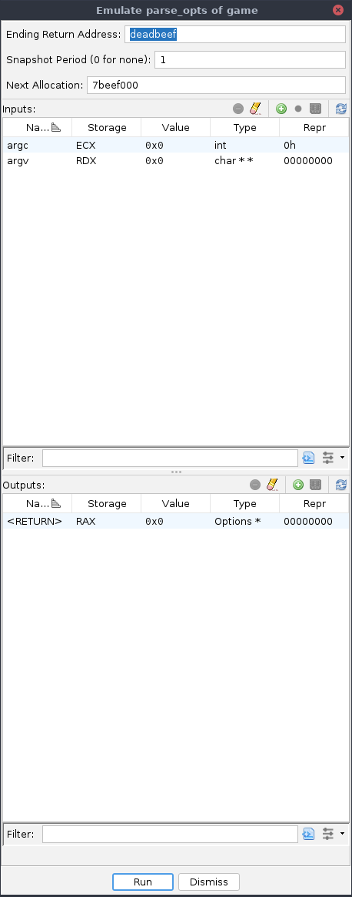

This service plugin provides emulation to the Trace Manager and provides actions for launching emulated traces from programs, i.e., without requiring a connected debugger. Please note that "pure emulation" of a target program, while it doesn't require a platform to execute the target natively, it typically does require significant state initialization and dependency stubbing, except in limited circumstances.
This action is available whenever a program is active. It will create a new trace suitable for "pure emulation" of the current program starting at the current address. More precisely, it will open a new blank trace, initialize it with the current program's memory map, allocate a stack, and create a thread whose program counter is initialized to the current address and whose registers are initialized to the register context at that address. Optionally, any other initialization can be done by manually modifying the trace in the UI, or using a script. The emulator controls can then be used.
To control the initial stack allocation, create a STACK block in the target
program database before emulating. If the stack is already in the target image's memory map,
create an overlay block named STACK. This will initialize the stack pointer
without modifying the emulator's memory map. Note that customizing the stack initialization may
prevent you from adding a second thread.
This action is available whenever a "pure emulation" trace is active. It spawns a new thread in the current trace suitable for emulation starting at the current address. More precisely, it will allocate another stack and create a new thread whose program counter is initialized to the current address and whose registers are initialized to the register context at that address. Optionally, other registers can be initialized via the UI or a script. The new thread is activated so that control actions will affect it by default.
This action is available whenever the cursor is within a function in the Static Listing. It displays a dialog for harnessing and emulating the current function.
This action is always available. It lists emulators available for configuration. Selecting one will set it as the current emulator. The next time emulation is activated, it will use the selected emulator.
This action is available whenever a trace is active. It invalidates all the scratch snapshots in the current trace, which are used for caching emulated machine states. This is recommended when you change the emulator configuration, when you change the Sleigh code of an emulated breakpoint, or when you patch the trace database. If you do not invalidate the cache, the effects of your change may not appear, since the trace manager may recall a cached snapshot instead of actually emulating.
This dialog provides a means of harnessing and emulating a target function. Depending on the size and scope of the function and the configuration of the emulator, the emulation may or may not complete. See further below for options and actions in the dialog.

The dialog supports the addition of vararg arguments, custom initializations, and heap initializations. All of these inputs are handled in the top table. The "Run" button will perform the emulation and capture the outputs into the bottom table. Analogous to the inputs, the Outputs table can be configured with custom variables and pointer dereferences. The emulation session can optionally be captured into a trace, which is opened automatically in your tool, usually the Debugger or Emulator. Multiple sessions can be run from the same dialog, allowing trial-and-error runs while also iterating on the target function's markup.
In order to detect the proper completion of the target function, the harness places a breakpoint at a "sentinel" address. That sentinel address must be placed where the function expects the return address. This option allows specification of the sentinel address. Generally, anything easily recognizable that does not conflict with a real address should work. NOTE: You cannot specify the location of the return address. This is determined automatically through static analysis, but you can place the sentinel address through a custom input, if the analysis fails or is incorrect.
By default, the harness captures a snapshot of the emulator's state into a trace after every instruction step. This feature can be disabled entirely by setting this option to 0 (zero), in which case no trace is captured or opened in your tool. Only the outputs are captured. Otherwise, the period indicates how many instructions are executed between consecutive snapshots. If only a starting and ending snapshot are desired, set this to a large number. The initial and final snapshots are always captured, no matter the (non-zero) period.
Set this to the location of the heap, if applicable. Any address not already used by the program with plenty of space above should suffice. It may help if the upper digits of the address are easily recognizable. Several of the below actions on the Inputs table will automatically initialize pointers to the start of an "allocated block". This field is then automatically incremented by the size of that allocation. You may adjust this field at any time to "undo" allocations, establish a second heap, etc.
The Inputs table lists of all the configured inputs. The types and values of the inputs are specified in this table. NOTE: No actual initializations are performed until right before emulation. If two inputs happen to be at the same address, that conflict will not be discovered until clicking "Run." No two inputs can have the same name. Adding an input with a duplicate name replaces the existing one.
The default inputs are derived from the target function's parameters. Adjusting the type of an input does not edit or update the target function in the program database. The columns are:
0x1234, so long as it fits in the storage, or as a
byte sequence, e.g., { 34 12 }, so long as its length matches that of the
storage.This action removes the selected input(s) from the table. A removed input is no longer initialized. NOTE: Inputs can have dependencies, e.g., an allocated block depends on its pointer, because the storage location of that block is computed from the value of the pointer. Removing the pointer will leave it uninitialized, likely resulting in the block's location being 0 (zero). This will generally still work, but is usually not desired. Re-adding the relevant pointer can fix this. So long as the old and new names match, the dependency relationship is restored, too.
For when things have gone so far south you need to start over. Typically this is followed by a Refresh, too.
This action prompts the user for a Sleigh expression of a variable's storage and adds it as
a Custom input. Typically, this is a register, e.g., RAX, or a fixed address and
size, e.g., *:8 0x00401234.
This action is only enabled if the target function has variable arguments. It prompts the user for a type, derives the storage from the target function's signature and calling convetion and adds it as a Vararg input. NOTE: Adjustments to this row's type will not automatically update the argument's storage. Consider deleting and re-adding an argument along with all its subsequent arguments if consistent storage is desired.
This action is available when the selected input has a pointer type. (Multiple selections
are supported.) The size of the pointed-to type is calculated; the pointer's value is
initialized to the Next Allocation, which is then incremented by the
size of the pointed-to type. A new input row is then added and selected, describing the
variable pointed to by the formerly-selected input. Under normal operation, this allocates a
single instance of the pointed-to type. To instead allocate an array of the pointed-to type,
hold <Shift> when clicking the button. If the pointed-to type is a composite
(struct or union), a separate row is generated for each field. For the array case, yes, this
results in an n-by-m set of new rows. If the pointed-to type is a string (or
char), hold <Ctrl> when clicking the button. This will prompt the
user for string data type settings and then for the initial string value. It encodes it and
allocates sufficient space for the encoding. NOTE: So long as edits to the Repr column
result in encodings of smaller or equal size, no re-allocation is necessary. The table will
still permit the edit, but it may result in conflicts. Either update the pointer values
manually — this will automatically adjust the storage location of the pointed-to variable
— or delete and re-allocate the string input.
This re-adds (likely replacing) all the inputs derived from the function's parameters. This is especially useful when trying to derive a function's signature by trial and error. Clicking this button after editing a function's signature will update the Parameter inputs accordingly. NOTE: This will not remove any Parameter inputs.
This action is available in the right-click context menu on rows with an assigned type. It controls the settings on the chosen datatype, e.g., radix for integer types, or encodings for string types.
The Outputs table is analogous to the Inputs table, except that it displays values captured from the last successful emulation. The default output is derived from the target function's return type. It has the same columns and similar actions with the following exceptions:
The Outputs table also supports "Probe" outputs. These are outputs automatically generated
during the emulation of the target function via the emu_probe userop. These are
configured using the Set
Injection action on a breakpoint. The breakpoint need only be enabled. Even if
"ineffective,"" it will be installed by the harness. The emu_probe userop accepts
exactly one argument. All Probe outputs are cleared at the start of emulation. Each time the
userop is executed, its argument is captured with its location and value at the time of
invocation. These are then added as Probe outputs, counting 1-up by invocation. If the
userop is invoked within a loop of the target code, each run-time invocation gets a distinct
row. Types can be applied as usual. NOTE: If the userop argument is anything other than
a simple varnode, the location will be "$Unique."